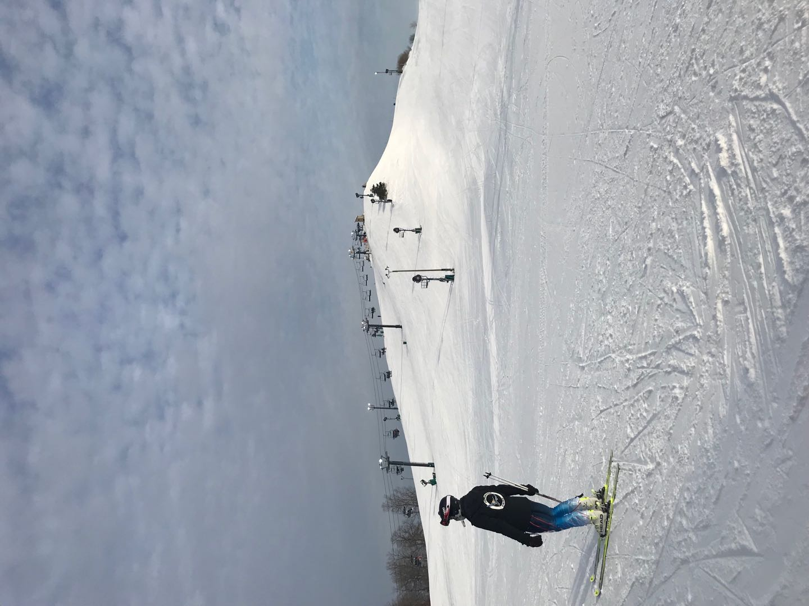
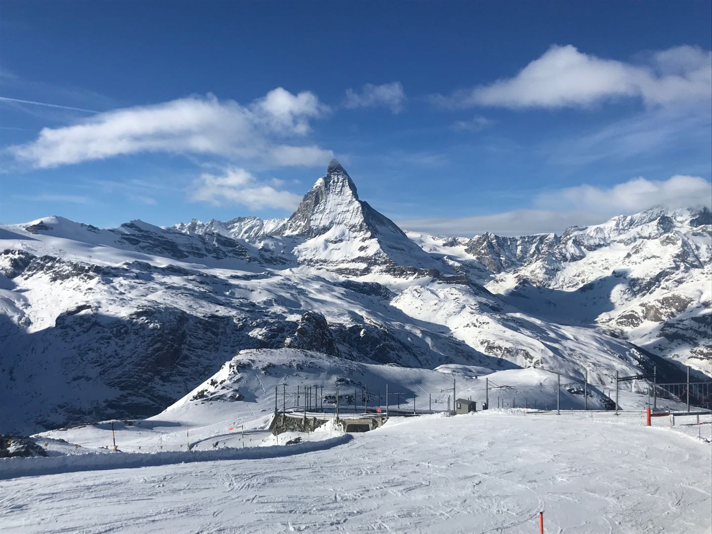
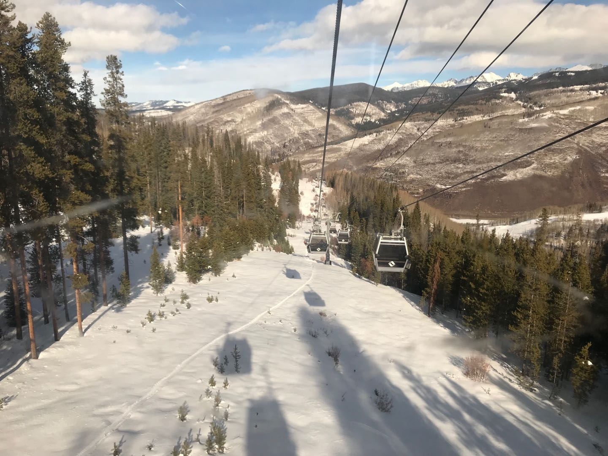

Texas A&M University - College Station
Major: Computer Science
Born
Aspiration
school. Even though it was confused for me to understand concepts between values and pointers.
I found I was interested in this field: which is close to machine and computer. It was from
there that through all my experiences, in both Michigan State University and Texas A&M University,
that I truly came to appreciate and respect my field.
Focus
After taking course "Introduction to Computer Systems", I am much interested in low-level programming, such as
Operating System, Compiler Design, and Computer Organization and Architecture. In the future, I wish to learn about
some Cybersecurity, and combined with concept in Computer Architecture, to have much deeper knowledge on cybersecurity.
Interests
I love travelling to new places and go skiing.
Fairbanks, AL
Brigton, MI
Zermatt, Switzerland
Los Alamos, NM
Denver, CO